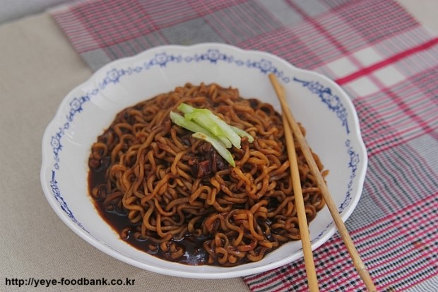

- 떡볶이
- 계란찜
- 짜장라면
짜장라면

짜장라면은 저렴한 짜장면을 더 저렴하게 만들 수 있는 음식이다.
하지만 보통 짜장라면이 아닌 좀더 중화틱하게 만드는 법을 알려줄것이다.
재료
- 물 적당히(면1개를 끓일 수 있으정도로)
- 양파 0.5개
- 농심 짜파게티
- 올리브유
- 고추가루(없어도 됨)
냄비에 물을 넣고 물을 끓인다.
그 사이에 양파를 채썰고 팬에 기름을 부은다음(많이 안부어도 됩니다.) 채썰은 양파를 넣고 볶습니다.
냄비의 물이 끓으면 면을 넣고 끓여 주세요.(후레이크는 자유입니다.)
양파도 다 볶고, 면도 다 익었으면 면수의 일부를 팬에 있는 양파에다가 넣습니다.
그리고 짜파게티 분말소스와 짜파게티 오일을 모두 넣고 섞어서 소스를 만드십시오.
소스가 다 만들어 졌으면 마지막으로 면을 넣고 약한불로 살짝 조리면 맛있는 짜장라면이 완성됩니다.
고추가루는 취향에 맟춰 넣으세요.
이미지 출처 : 만개의 래시피